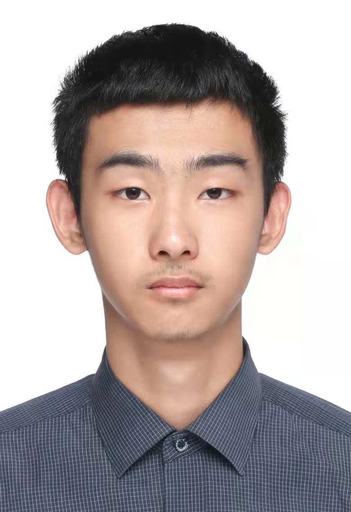
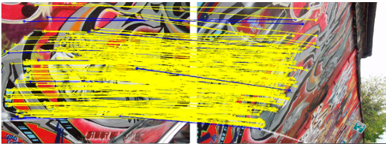
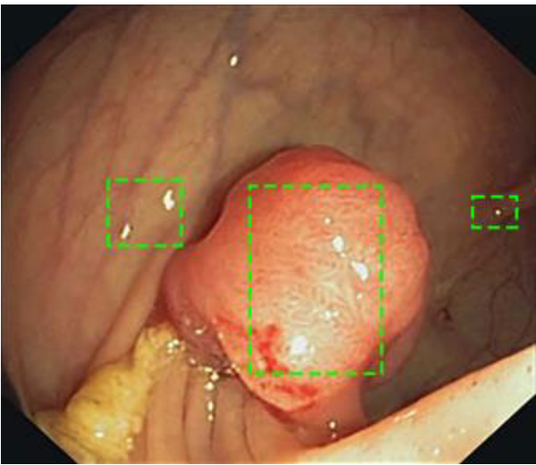
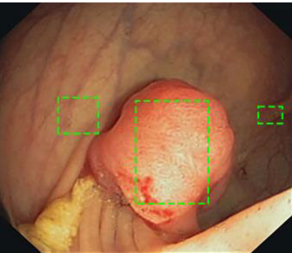
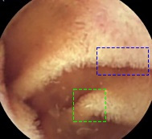
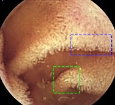

Ongoing
GS-Bench: A Multidimensional Evaluation Framework for Gaussian-Splatting SLAM
Evaluating trajectory, geometry, rendering quality and efficiency in Gaussian-splatting SLAM.
ARTIFICIAL INTELLIGENCE · COMPUTER VISION

Hello, 你好!
I am Yukai Wang, an MSc student in Artificial Intelligence at the University of Manchester. My research focuses on computer vision, Gaussian-splatting SLAM, medical imaging, and clinical translation of medical AI.
I aim to make visual perception more reliable and medical AI more useful in practice. With Prof. Mikel Luján, I developed GS-Bench to compare SLAM systems across trajectory, geometry, rendering and efficiency, evaluating six methods on three datasets. With Claudia Lindner, I mapped the evidence needed to connect medical AI validation with clinical use.
Previously, I received my BEng in Artificial Intelligence from Jiangnan University. My research outputs include LV-FeatEx for large-viewpoint image feature extraction and co-authored work on capsule endoscopy enhancement and highlight removal, aimed at improving the visibility of tissue details.
I am currently seeking PhD opportunities in these research areas. Please get in touch if you are interested in working together.
Started GS-Bench research with Prof. Mikel Luján at Manchester.
Joined Claudia Lindner’s research on medical AI evaluation and clinical translation.
Started my MSc in Artificial Intelligence at the University of Manchester.
Graduated from Jiangnan University with a BEng in Artificial Intelligence.
Joined the National Supercomputing Center in Wuxi as an AI Engineer Intern.
Joined Inspur Group as a Data Governance Engineer Intern.
Evaluating trajectory, geometry, rendering quality and efficiency in Gaussian-splatting SLAM.
Connecting medical AI validation with evidence for real-world clinical use.


Original
Ours
Original
Ours